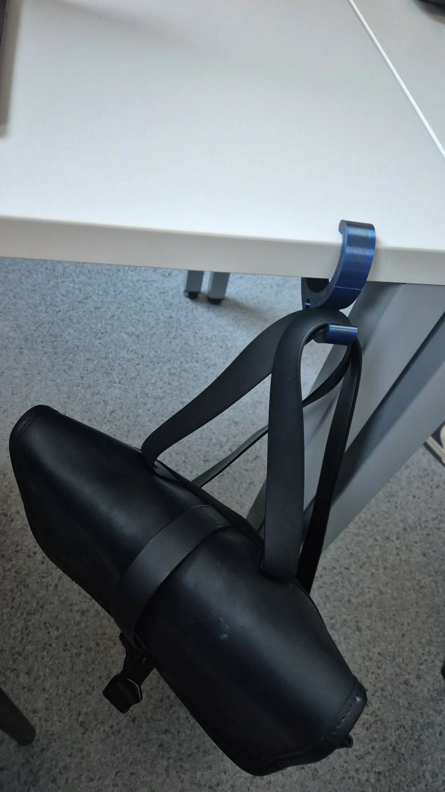
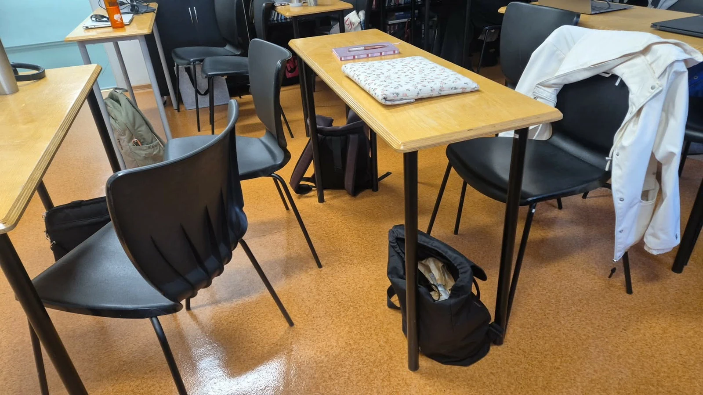
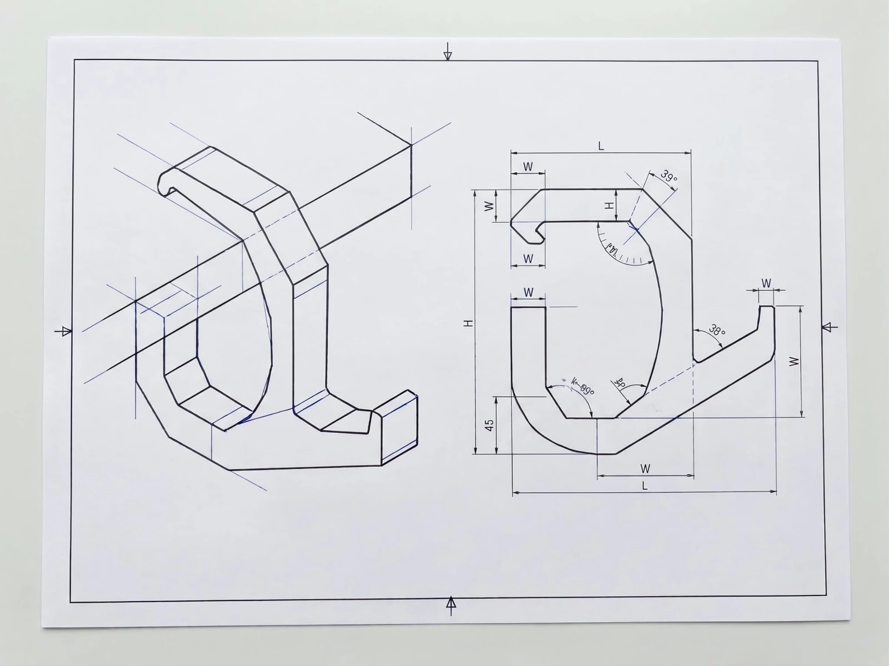
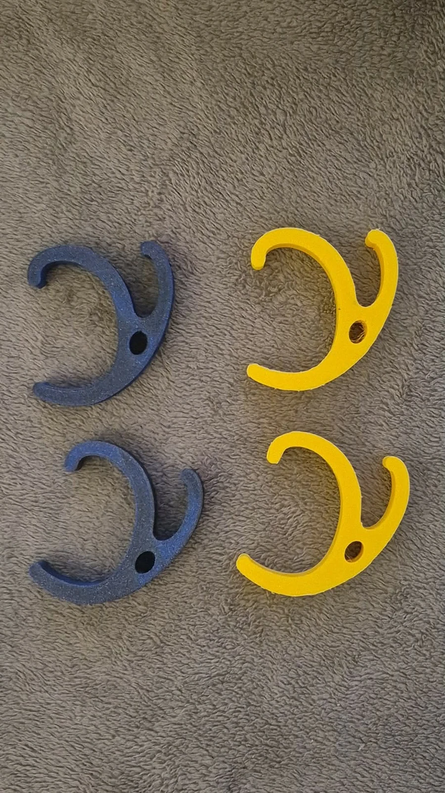
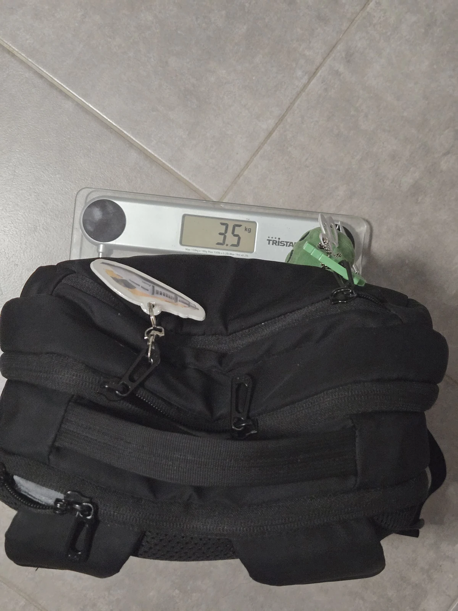
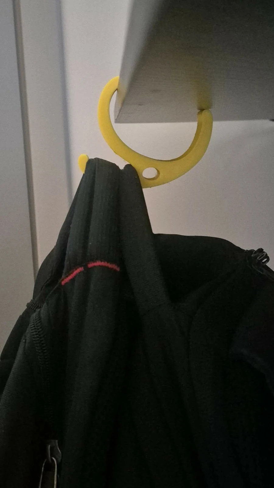

Rühm 2 · Kasutajauuring ja prototüüpimine
Koolikoti konks
Teisaldatava konksu prototüübid, mis annavad koolikotile kindla koha laua juures ja vabastavad põrandapinda.


Probleem ja eesmärk
Rühm märkas, et algklassides jäetakse kotid tihti tooli kõrvale või vahekäiku. Põrandal olev kott võib määrduda ja liikumist takistada, laual aga võtab see ära õppevahendite ruumi.
Õpetajate ja koolitöötajatega tehtud intervjuud, vaatlused klassiruumis ja sööklas ning olemasolevate lahenduste võrdlus aitasid sõnastada peamise nõude: konks peab kinnituma kiiresti ja mööblit kahjustamata. Samuti tuli arvestada erineva paksusega lauaplaatide ja erinevate kotisangadega.
Lahendus
Rühm kavandas lauaservale asetatava konksu, mida saab õpilane ise ühest klassiruumist teise kaasa võtta. Kavandis arvestati ligikaudu 18–25 mm paksuste lauaplaatidega. Kinnitus pidi püsima koormuse all ning jätma lauapinna terveks.
Põhifunktsiooni kõrval uuriti, kas riputusaas ja helkurmaterjal võimaldaksid kanda konksu kooliteel koti küljes. Rühm kaalus ka nime ja värvi järgi isikupärastamist.
Arendusprotsess
-
10. september – 1. oktoober Teema valimine ja esimene kinnituskatse
Rühm arutas septembris mitut disainiideed ja valis 1. oktoobriks kotikonksu ja helkuri ühise kavandi. Esimene laserlõigatud näidis näitas, et üks kuju ei sobi igale lauale. Paksema lauaplaadi puhul prooviti kinnitust ka tooli seljatoel.
-
8.–15. oktoober Kuju ja materjalide võrdlus
Kohandati prototüüpi, katsetati helkurvestist lõigatud riba ja arutati riputusaasa. Prototüübisprindis pöörati tähelepanu kahele põhiküsimusele: kas kott püsib konksu otsas ja kas konks ise püsib lauaserval. Rühm proovis nii puidust kui ka 3D-prinditud mudeleid.
-
18.–28. oktoober Õpilaste ideed ja vaheesitlus
Järveküla Koolis pakuti konksule erinevaid kujusid. Rühm valmistas osa neist laserlõikuril proovimudeliteks ning kaalus koolikotte. Päevikus ulatus ühe esialgse kaalumiskatse näit vahemikku 1,6–6 kg. 28. oktoobril esitleti disainiprotsessi vahenädalal.
-
12.–19. november Kaalumine, eelistused ja helkurinäidis
Päeviku 12. novembri sissekanne koondab esimese klassi õpilaste koolikottide kaalumise ja tagasiside konksuvariantide kohta. 19. novembriks valmis MDF-plaadist, helkurmaterjalist ja kahepoolsest teibist näidis.
Pildid ja joonised










Tulemus
Valmis mitu eri kuju ja materjaliga proovimudelit ning eraldi helkurpinnaga näidis. Õpilaste ideed, eelistused ja kottide kaalumine aitasid rühmal siduda konksu kuju tegelike kasutusolukordadega.
Edasiseks jäi kontrollida, kuidas konks sobib eri koolilaudadele, millist koormust see korduval kasutamisel kannab ning kas helkurpind püsib ja toimib nõuetekohaselt.